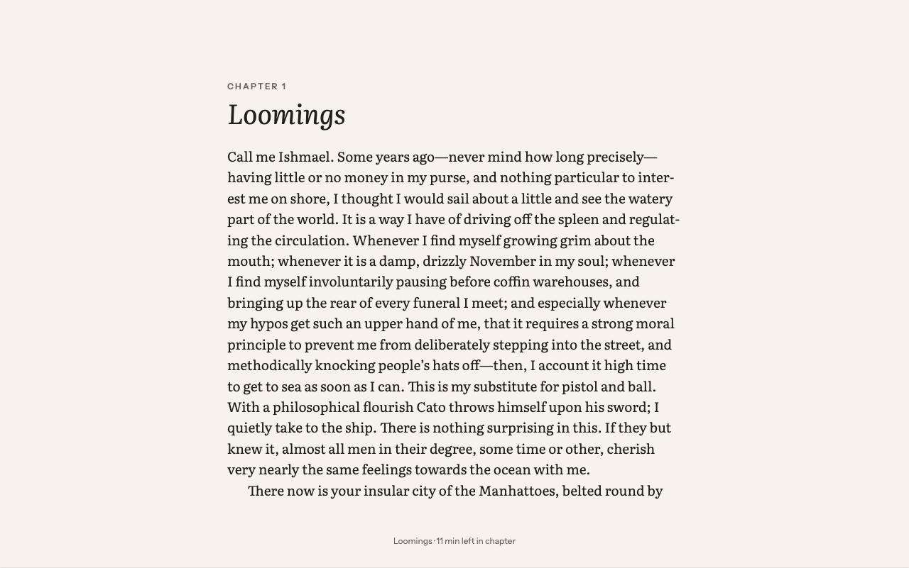
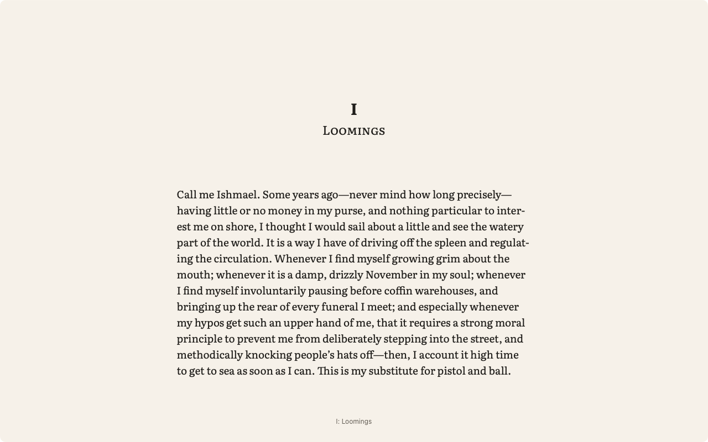
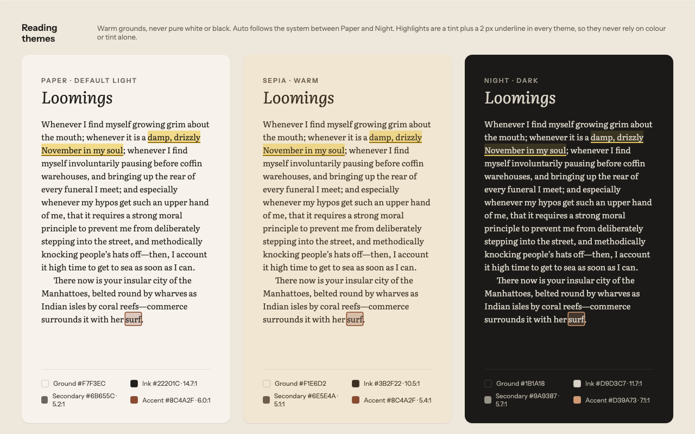
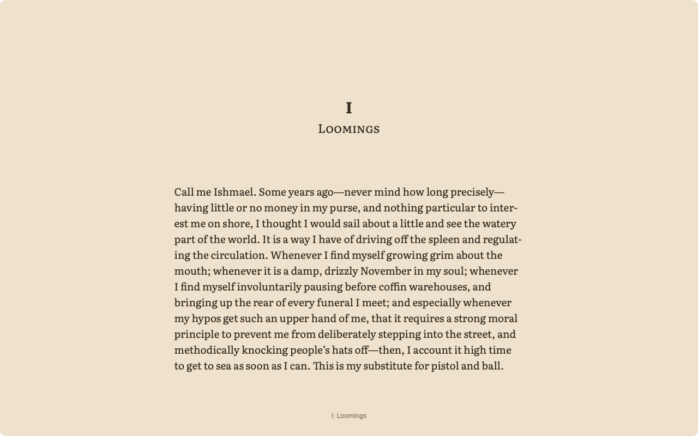
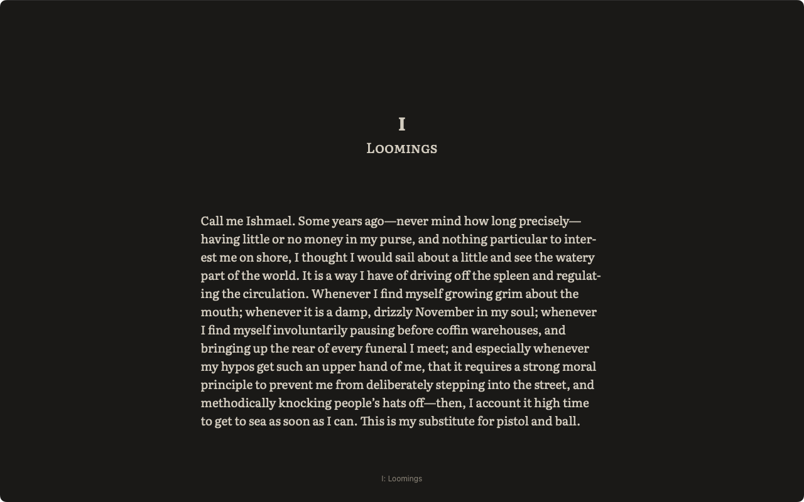
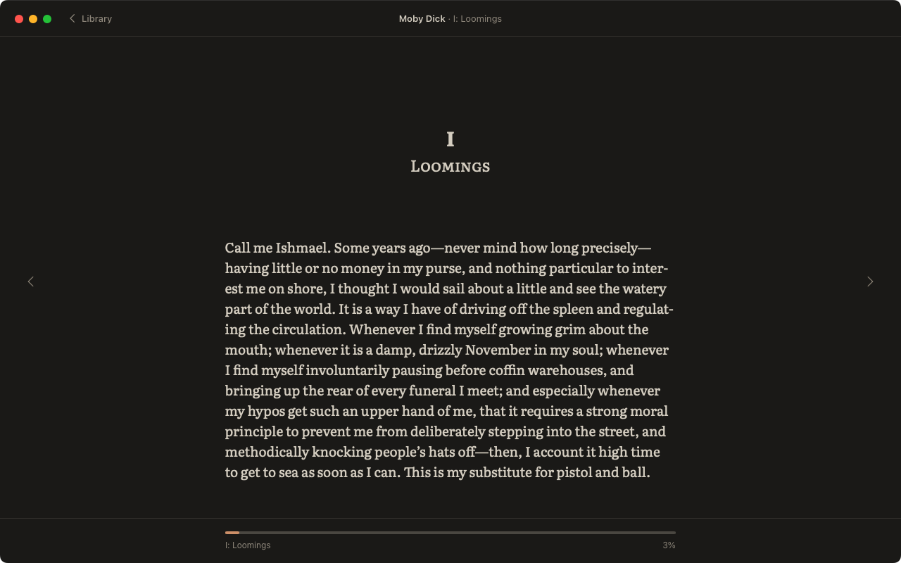

Visual baseline review — Phase 2 reader
Each pair shows the approved mock (left) and the app in the same state (right): Moby-Dick chapter 1 at 1280 × 800 in the mock's theme, captured from the app's own window on the reference Mac (WebKit 19618). Per plan §6.1, you compare them by eye; once you sign off, the app screenshots become the baselines that later changes are checked against.
| Tag | Meaning |
|---|---|
| expected | A deliberate difference: the rules say the book or the reader's data decides it |
| later phase | The feature is built in a later phase; hidden until then (plan §5) |
| your call | A difference that needs your decision before sign-off |
Screen 02 — Reader, immersive (Paper)


- Matches: the page fills the window with no title bar or window buttons; the column is at x = 320 and 640 px wide; Literata 19/1.55; hyphenation; location line centred 30 px from the bottom.
- expectedThe chapter heading (“I / Loomings”, centred, small caps) and the space above the text come from the book's own CSS (Standard Ebooks); the mock's “CHAPTER 1 / Loomings” is illustrative. The publisher decides structure (L13).
- expectedLocation line reads “I: Loomings” (the book's own table of contents) without “· 11 min left in chapter”: minutes appear after 5 minutes of reading (B2).
Screen 03 — Reader, controls visible (Paper)


- Matches: 52 px top bar with the window buttons in it, Library, the centred title; 64 px bottom bar with the progress track and labels; margin chevrons at the same positions.
- later phaseContents (Phase 3), Search (Phase 4), Notes (Phase 5), Aa (Phase 6) and ⋯ (Phase 7) are hidden until their features exist.
- later phaseThe scrubber's thumb and preview tooltip (N7) and the clickable Go to label (N8) arrive in Phase 3; today the bar shows progress only.
- expectedTitle “Moby Dick” and chapter “I: Loomings” come from the book's metadata and table of contents.
Screen 10 — Reading themes



- Matches: the grounds and inks are the approved tokens (V1), checked by the contrast tests.
- later phaseThe highlights shown on the mock arrive in Phase 5; their colours (with the approved C7 adjustments) are already in the tokens.
Screen 14 — Night, controls (and selection)


- Matches: Night chrome keeps the page colour with the #3A3733 hairline (V2).
- later phaseThe selection bar and highlights on this board are Phase 5; this baseline covers the chrome only, as plan Phase 2 says.
Your call
- your callApprove these four as the Phase 2 baselines, with the differences above marked expected or later phase.